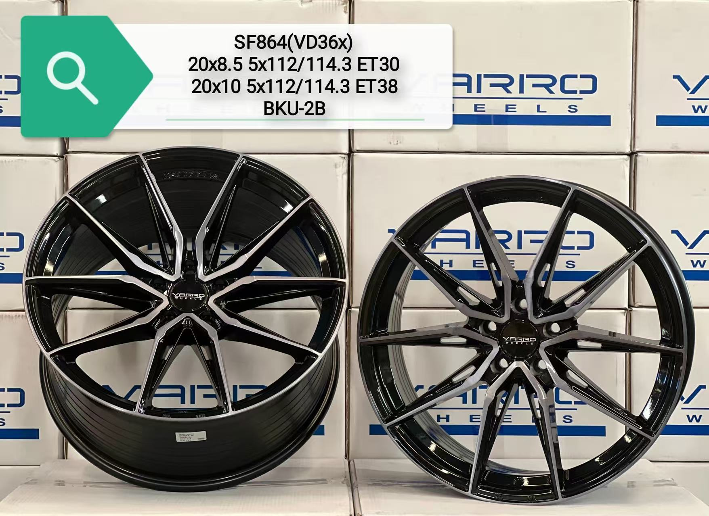

Varro SF864（VD36x) 20x8.5/10JJ | PCD 5x112/114.3 | ET30/38 | CB73.1m m | BKU-2B

RM 6500.00
The Original Varro Wheels VD36X (SF864) is a 20-inch staggered Spin Forged (flow-formed) monoblock alloy wheel featuring a split 5-spoke concave design in a Gloss Black with Machined/Brushed Face finish. Product Description (Copy-Paste Ready) 100% Original Varro Wheels VD36X (SF864) – 20" Staggered Set Upgrade your stance with the genuine Varro Wheels VD36X from the Spin Forged Series. Engineered using advanced rotary flow-forming technology, this wheel offers a thinner, lighter inner barrel with significantly higher tensile strength and shock resistance compared to standard cast wheels. Specifications: • Brand: Varro Wheels (100% Original / Genuine) • Model: VD36X (Code: SF864) • Construction: 1-Piece Monoblock, Spin Forged (Flow-Formed) • Front Size: 20 x 8.5J | Offset: ET30 • Rear Size: 20 x 10.0J | Offset: ET38 • Bolt Pattern (PCD): Dual-drilled 5x112 / 5x114.3 • Finish: Gloss Black with Machined / Brushed Face (BKU-2B) • Design: Aggressive Split 5-Spoke Concave Profile with Varro Center Caps Compatibility: Fits a wide range of Continental and Japanese vehicles with 5x112 or 5x114.3 PCD, including Mercedes-Benz (C-Class, E-Class, GLC), Audi (A4, A5, A6), BMW (G-Series), Volkswagen, Honda, Toyota (Alphard, Vellfire, Camry), and Lexus models. (Note: Please verify brake caliper clearance and exact fender fitment for your specific vehicle model before installation.)
Klang Hock Li Tyre Services Sdn Bhd, Klang, Selangor, Malaysia.
View live product details and enquire